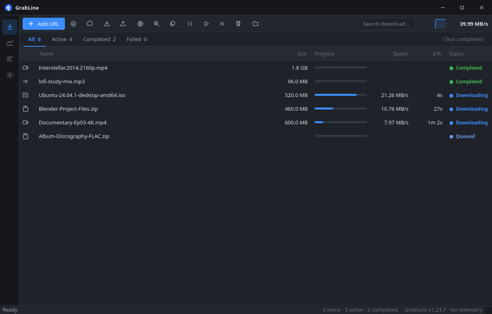
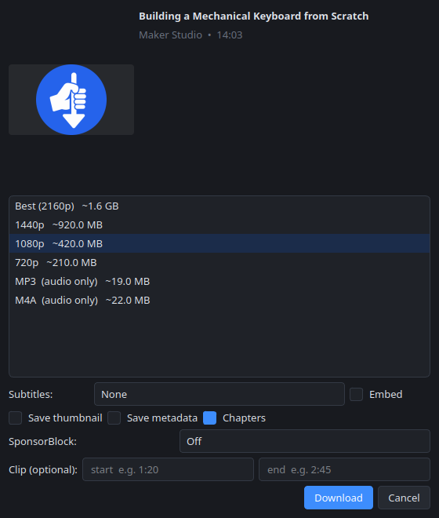
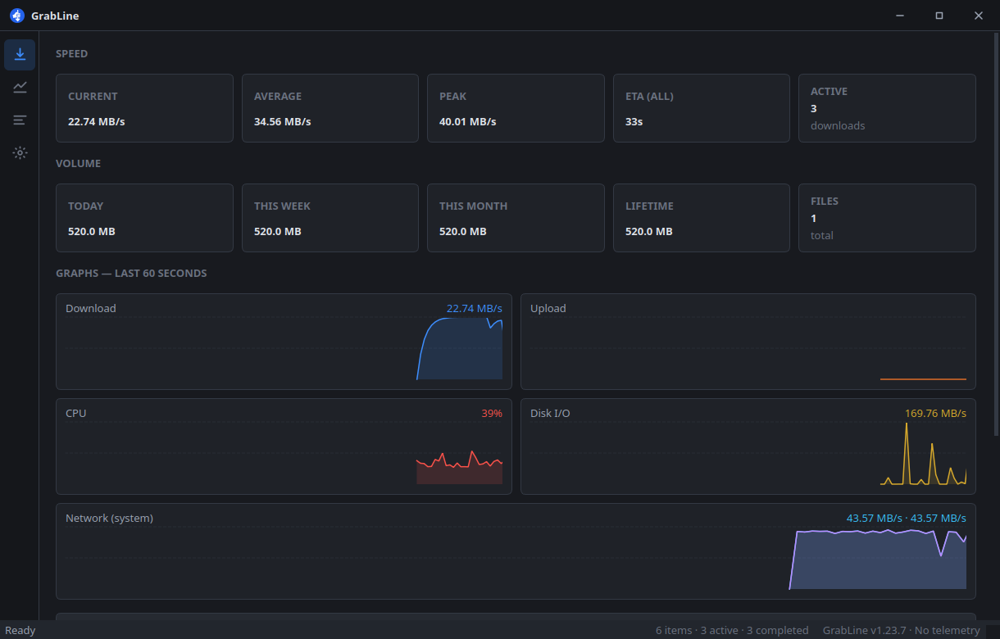

GrabLine grabs files, videos, whole pages and torrents, and downloads them fast by splitting each one across many connections at once. Free, open-source, no ads, no analytics. Windows, macOS and Linux.
GrabLine is a free app that downloads things from the internet for you: a file, a video off YouTube, every image on a page, a torrent, or a file on your own server. It splits each download into many pieces and fetches them at the same time, so it finishes far faster than your browser would, and it picks up where it left off if your connection drops. There are no ads, no account, and nothing is sent anywhere. Everything happens on your computer.
Sidebar navigation, a live dashboard, a details drawer, and light and dark themes that switch instantly.

assets/shot-queue.png

assets/shot-quality.png

assets/shot-dashboard.png
Every card starts with what it does for you. The specifics follow for anyone who wants them.
Split every download across up to 128 connections so it finishes in a fraction of the time. Each connection is a real, separate line to the server, not one shared pipe. If the power cuts or your Wi-Fi drops, it resumes from exactly where it stopped.
Hover a video and click the GrabLine button, or right-click anything to send it over. A video opens a panel where you choose the quality, format and subtitles; a file downloads straight away. It talks to the app directly, with no open ports.
Save videos from 4K down to 144p, or just the audio as MP3, M4A or FLAC with cover art and tags. Subtitles, playlists, chapters, SponsorBlock and clip trimming are all built in, powered by yt-dlp.
Save HLS and DASH streams (.m3u8 / .mpd) as a clean MP4. GrabLine fetches every piece itself, so streams behind a picky CDN still work, and a paused stream resumes instead of starting over.
Line downloads up in named queues that run in order or together, on a schedule you set. Auto-sort by type, start one after another finishes, and have the computer sleep or shut down when everything's done.
Open magnets and .torrent files right in GrabLine — no second app. DHT, peer exchange, file selection, sequential streaming, seed-ratio limits and RSS auto-download, powered by libtorrent.
Download over SFTP, FTP, S3 and WebDAV with saved logins kept in your system keychain, and turn Google Drive, Dropbox or OneDrive share links into direct downloads. Grab a whole remote folder at once.
Open ZIP, TAR, GZIP and more without another app, and extract only the files you pick. Auto-extract after download, remembered passwords, and an optional virus scan first.
Route downloads and torrents through a proxy (HTTP, HTTPS, SOCKS), cap the speed globally, per download or per site, and let GrabLine ease off automatically when you need the internet for something else.
Live speed, ETA, and how much you've downloaded today, this week and all time, broken down by site and category, with graphs for speed, network, CPU and disk.
Clean filenames from the page title, auto-sorted into Video, Music, Documents and more. Duplicate detection, your own rename rules, and searchable tags and notes on every download.
Verify checksums, scan finished files with your own antivirus, and get a heads-up before an unencrypted download. A warning is only a warning: the file is always yours to keep.
URL patterns like file[1-100].jpg, drag-and-drop, video → GIF,
a download inspector, dark and light themes, and start-in-the-tray on login.
Download and run the installer. GrabLine appears in your Start menu, Spotlight or app grid like any other program, and pairs itself with your browsers on first launch.
Firefox users install GrabLine Connect from Firefox Add-ons. Other browsers get a one-click Add to your browser in the setup window; the extension ships inside the app.
Paste a link, drop it on the window, or click the GrabLine button in your browser. For MP3 and streams, GrabLine installs FFmpeg for you from Settings the first time you need it.
The installers aren't code-signed yet, so the OS warns on first launch: on Windows
choose More info → Run anyway; on macOS right-click → Open. That's
normal for open-source apps without a paid signing certificate. On Linux, if the
AppImage won't start, grab the
.tar.gz
(no FUSE needed) and run ./grabline/grabline.
Full install guide →
All releases →
Netflix, Prime Video, Disney+, Spotify tracks and the like are refused with a clear message, never a workaround.
The optional browser-session feature uses your login for your content. Cookies are read for that download and are not uploaded anywhere.
No ads, no accounts, no usage telemetry to us. Downloads contact the sites you ask for; a quiet GitHub update check is the only maintenance call.
Yes. GrabLine is free and open-source under AGPL-3.0. There is no paid tier, no trial, and no upsell. You can read every line of the source on GitHub.
The warning appears because the installers aren't signed with a paid certificate yet, which is common for open-source apps. The code is public and built in the open. On Windows choose “More info → Run anyway”; on macOS right-click the app and choose “Open”.
Same idea — many connections for faster downloads and a browser button — but GrabLine is free and open-source, runs on macOS and Linux as well as Windows, and adds a full video/audio downloader, a torrent client, cloud transfers and an archive manager. No ads or analytics; nothing is sent to us.
Yes. Hover a video, click the GrabLine button, and pick the quality and format (up to 4K, or audio as MP3/M4A/FLAC), with subtitles and trimming. It supports 1000+ sites through yt-dlp.
None. No ads, no analytics, no accounts. The optional VirusTotal and Safe Browsing checks are off by default and use your own API keys if you turn them on.
No. Those services are DRM-protected, and GrabLine does not and will not bypass DRM. It refuses them with a clear message rather than pretending. (Spotify podcasts, which aren't DRM-protected, download fine.)